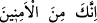

zaman da kendine çeker.
Buna göre âyetin “kanadını kendine çek” kısmı, ““ elini koynuna sok” emrinin
elini koynuna sok” emrinin
bir tekrarı değil; bir önceki âyette geçen
“Çünkü sen emniyette olanlardansın ifâdesini tamamlayan bir unsuru
olmuş olur. “ ; üzüntü ve sızlanma ile korkmak, d
emektir. Yani, senin başına bir
; üzüntü ve sızlanma ile korkmak, d
emektir. Yani, senin başına bir
korku ârız olsa, zorluklara tahammül etmek yahut nefsine hâkim olmak için böyle yap,
demektir. “ “İşte bu ikisi” asâ ve el, “iki kesin delil” ve apaçık parlak iki
mûcizedir, burhandır.
“ (delil)” kelimesi “ veznindedir. Arapların “
(delil)” kelimesi “ veznindedir. Arapların “ Adam delil ve huccet
Adam delil ve huccet
getirdi” sözünden alınmıştır. Yahud da “  (Adam beyazlaştı)” sözünden gelir.
(Adam beyazlaştı)” sözünden gelir.
Beyaz ve parlak kadına “ ve “ denilir. Bu kelimenin bir benzeri de “ için
denilir. Bu kelimenin bir benzeri de “ için
kullanılan “ kelimesidir. Bu kelime, zeytin yağı mânâsına gelen “den alınmış,
kelimesidir. Bu kelime, zeytin yağı mânâsına gelen “den alınmış,
aydınlatma özelliğinden dolayı “huccet” için isim olarak kullanılmıştır. Zayıf bir görüşe
göre de “ kelimesi, veznindedir. Yâni  kalıbında olup Arapların “
kalıbında olup Arapların “ delil
delil
getirdi” sözünden alınmış ve isim olarak kullanılmıştır.
“ Rabbinden...” ifâdesi, “ kelimesinin sıfatıdır. Yani, Allah Teâlâ’dan
“Firavun ve onun adamlarına” ulaşan, demektir. Buna göre âyetin anlamı şu şekilde
olur: “İşte bu ikisi Allah tarafından ortaya konulan ve Firavun ve onun adamlarına
ulaşan iki kesin delildir.”
“Çünkü onlar, yoldan çıkan” zulüm ve düşmanlıkla haddi aşan “bir kavim
olmuşlardır” (diye seslenildi).” Bu yüzden bu iki mûcîze ile kendilerine elçi ve
peygamber göndermemizi hak etmişlerdir.
Müslim, Fiten, 82; Müsned, II, 417.
Aclûnî, I, 412.